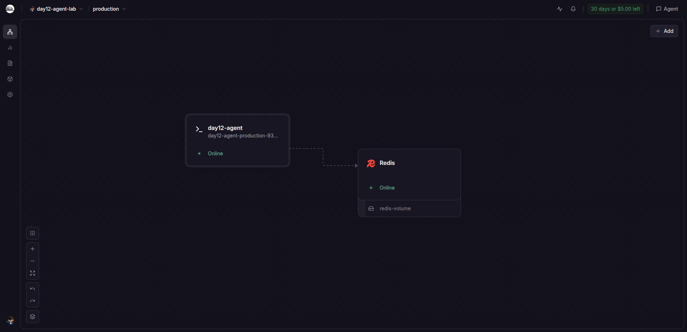
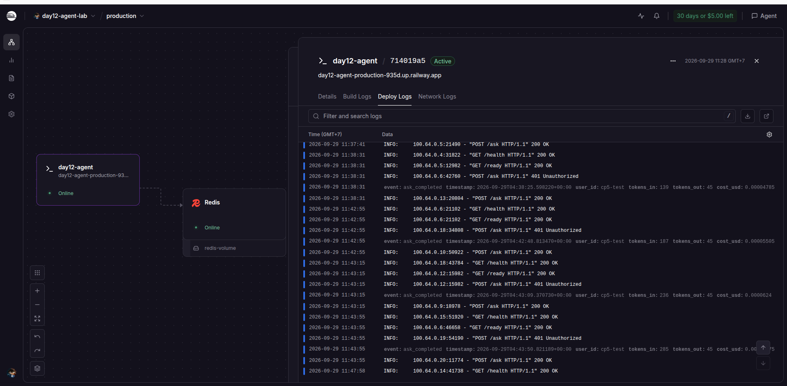
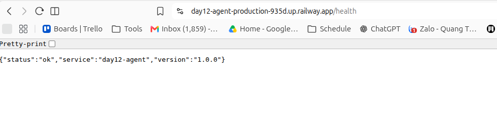

Ứng dụng hoạt động như thế nào?
Người dùng gọi /ask. API kiểm tra khóa, giới hạn số lần gọi và ngân sách trước khi hỏi LLM giả lập. Lịch sử hội thoại và bộ đếm được lưu ở Redis. Trên máy, Nginx phân phối yêu cầu tới ba bản sao ứng dụng; trên Railway, dịch vụ web kết nối Redis của cùng dự án.
f766425 đã có trên origin/main. Ba ảnh minh chứng đã được kiểm tra ở máy và đang chờ commit, push.Chuẩn bị môi trường
- Đọc hướng dẫn và bài kiểm tra.
Tôi dùng LAB_GUIDE.md để xác định mục tiêu từng checkpoint, rồi đọc các bài kiểm tra tương ứng trước khi sửa mã.
- Chuẩn bị Python, thư viện và khóa cục bộ.
Môi trường ảo
.venvcài các gói trongrequirements.txt. KhóaAGENT_API_KEYnằm trong.envcục bộ; tệp này bị loại khỏi Git và gói Docker. - Bật Redis trên máy.
Redis phục vụ giới hạn tốc độ, ngân sách và lịch sử. Các bài kiểm tra dùng Redis giả khi cần, còn quá trình chạy Compose dùng Redis thật.
python3 -m venv .venv
source .venv/bin/activate
pip install -r requirements.txt
docker compose up -d redisTách cấu hình, thêm health check và log JSON
Mục tiêu là dùng cùng mã nguồn ở máy cá nhân và trên cloud. Giá trị thay đổi theo môi trường được đọc từ biến môi trường, không ghi cứng trong mã.
- Tạo cấu hình tập trung.
Trong app/config.py, tôi khai báo
PORT,REDIS_URL, giới hạn gọi, ngân sách, mức log vàAGENT_API_KEY. Khóa API là trường bắt buộc, không có giá trị mặc định. - Ghi log một dòng JSON.
app/logging_utils.py ghi tên sự kiện, mức log, thời gian UTC và các trường bổ sung ra stdout. Một sự kiện là một dòng để hệ thống cloud có thể lọc log.
- Thêm
GET /health.Endpoint trong app/main.py trả trạng thái process, tên dịch vụ và phiên bản. Nó không gọi Redis, vì mất kết nối Redis không có nghĩa process cần khởi động lại.
pytest tests/test_cp1.py -v
curl -i http://localhost:8000/health
# Mong đợi: HTTP 200, status = "ok"Điểm mấu chốt: thiếu khóa thì ứng dụng báo lỗi cấu hình ngay khi khởi động; /health chỉ kiểm tra process.
Đóng gói ứng dụng bằng Docker
- Viết Dockerfile hai giai đoạn.
Dockerfile cài thư viện trong giai đoạn build, sau đó chỉ chuyển kết quả sang image chạy bằng Python slim. Tệp thư viện được copy trước mã nguồn để tận dụng bộ nhớ đệm khi build.
- Chạy bằng user thường và đọc cổng cloud.
Container dùng
appuser, lắng nghe trên0.0.0.0và dùng${PORT:-8000}. Docker health check gọi/health. - Giữ bí mật khỏi image.
.dockerignoreloại.env, Git, môi trường ảo và các tệp cache. Khóa được đưa vào lúc chạy, không nhúng trong image. - Ghép các dịch vụ bằng Compose.
docker-compose.yml khai báo Redis, ứng dụng và Nginx. Ứng dụng nhận khóa từ biến môi trường; địa chỉ Redis dùng tên service
redistrong mạng Compose.
docker build -t day12-agent:prod .
docker compose up -d --build
docker compose ps
pytest tests/test_cp2.py -vĐiểm mấu chốt: image có môi trường chạy nhất quán; Nginx giữ cổng máy 8000 để về sau có thể chạy nhiều bản sao ứng dụng.
Bảo vệ API trước khi gọi LLM
- Kiểm tra API key.
app/auth.py đọc header
X-API-Key, so sánh bằngsecrets.compare_digestvà trả401nếu thiếu hoặc sai khóa.X-User-Idxác định người dùng cho bộ đếm. - Giới hạn 10 yêu cầu trong 60 giây.
app/rate_limiter.py dùng Redis Sorted Set: bỏ mốc thời gian cũ, đếm lượt còn trong cửa sổ trượt, chặn bằng
429khi đủ hạn mức, rồi mới ghi lượt hợp lệ. - Giới hạn ngân sách tháng.
app/cost_guard.py lưu chi phí theo người dùng và tháng, trả
402nếu hết ngân sách. Sau một lượt thành công, chi phí mới được cộng dồn. - Nối các lớp vào
POST /ask.Thứ tự trong
app/main.pylà xác thực → giới hạn tốc độ → kiểm tra ngân sách → đọc lịch sử → gọi LLM giả lập → lưu hai tin nhắn → ghi chi phí và log. Các yêu cầu bị chặn dừng trước bước gọi LLM. - Sửa cách thử bằng terminal.
Docker Compose tự đọc
.env, nhưng lệnhcurltrong terminal thì không. Tôi nạp biến trước khi thử, rồi dùng dấu nháy kép trong header để$AGENT_API_KEYđược thay bằng giá trị thật.
set -a
source .env
set +a
curl -i -X POST http://localhost:8000/ask \
-H "Content-Type: application/json" \
-d '{"question":"Hello"}'
# Thiếu key → 401
curl -i -X POST http://localhost:8000/ask \
-H "Content-Type: application/json" \
-H "X-API-Key: $AGENT_API_KEY" \
-H "X-User-Id: sv01" \
-d '{"question":"Docker là gì?"}'
# Có key → 200
pytest tests/test_cp3.py -vĐiểm mấu chốt: lỗi gọi có khóa ban đầu đến từ biến shell chưa được nạp hoặc header chứa nguyên chữ $AGENT_API_KEY, không phải từ cơ chế xác thực.
Lưu trạng thái ở Redis và chạy ba bản sao trên máy
- Đưa lịch sử hội thoại ra khỏi bộ nhớ process.
app/store.py lưu tin nhắn theo người dùng trong Redis List. Mỗi lần ghi, ứng dụng giữ tối đa 20 tin gần nhất và gia hạn thời gian lưu 7 ngày.
- Thêm
GET /ready.Endpoint này gọi Redis
ping. Redis sẵn sàng thì trả200; mất kết nối hoặc đang tắt thì trả503. Nó khác/health, vốn không phụ thuộc Redis. - Xử lý tín hiệu tắt.
app/lifecycle.py đánh dấu ứng dụng đang tắt khi nhận SIGTERM/SIGINT, đồng thời chuyển tín hiệu cho handler trước đó của máy chủ để quá trình tắt vẫn hoàn tất.
- Chạy ba container ứng dụng.
nginx/nginx.conf chuyển yêu cầu vào nhóm ứng dụng. Ba bản sao dùng chung Redis nên lịch sử vẫn liên tục khi yêu cầu đi qua các container khác nhau.
docker compose up -d --build --scale agent=3
docker compose ps
curl -i http://localhost:8000/ready
pytest tests/test_cp4.py -vĐã xác minh tại máy: ba container agent khỏe mạnh sau Nginx, /health và /ready trả 200, Redis giữ lịch sử và các giới hạn lưu trữ. Việc chạy ba bản sao này là kiểm tra cục bộ; Railway hiện dùng một dịch vụ web.
Triển khai lên Railway và kiểm tra URL công khai
- Chuẩn bị gói triển khai.
Tôi thêm
.railwayignoređể loại.env,.venvvàrailway.tomlcũ khỏi gói upload. Dockerfile đã sẵn sàng đọc cổng do Railway cấp. - Đăng nhập và tạo tài nguyên Railway.
Sau khi người dùng đăng nhập, tôi tạo project
day12-agent-lab, Redis service và web serviceday12-agent. Redis được triển khai thành công trước web service. - Cấu hình biến môi trường.
Web service nhận
REDIS_URLdưới dạng tham chiếu tới Redis của cùng project, mộtAGENT_API_KEYriêng cho cloud,RATE_LIMIT_PER_MINUTE=10,MONTHLY_BUDGET_USD=10.0vàLOG_LEVEL=INFO. Giá trị khóa không được đưa vào mã hoặc trang này. - Đặt kiểm tra sức khỏe và triển khai.
Railway dùng
/readylàm health check. Tôi tải mã bằng Railway CLI; bản triển khai714019a5-6e9f-4439-a35d-4f84eb9bb448báoSUCCESSvàRUNNING. Người dùng cung cấp URL HTTPS công khai để tôi kiểm tra tiếp. - Thử API qua Internet.
Tôi gọi
/health,/ready,/askthiếu khóa,/askcó khóa cloud và 15 lượt cùng một người dùng. Kết quả được ghi trong DEPLOYMENT.md.
npm exec --yes --package=@railway/cli -- railway up \
--service day12-agent --environment production
pytest tests/test_cp5.py -v
# Đã kiểm tra: 9 passed, 4 skipped
# 4 bài skipped chỉ dành cho phương án chạy cục bộ.| Phép thử | Kết quả thật |
|---|---|
GET /health | 200, status: ok |
GET /ready | 200, redis: true |
POST /ask thiếu khóa | 401 |
POST /ask có khóa cloud | 200, có câu trả lời |
| 15 lượt liên tiếp, cùng người dùng | 10 lượt 200, 5 lượt 429 |
Ảnh minh chứng



status: ok.Lab dùng LLM giả lập, nên phép thử này chứng minh luồng API, Redis, xác thực và giới hạn tốc độ; nó không chứng minh kết nối tới nhà cung cấp LLM trả phí.
Đã xác minh và việc còn lại
Chạy lại ngày 29/09/2026: pytest cho CP1–CP5 đạt 77 passed, 4 skipped, 2 deselected. Lệnh tự chấm grade.py --no-bonus báo 100/100 điểm phần bắt buộc khi loại hai bài dựng lại Docker image. Đây là điểm tự chấm; giảng viên vẫn đánh giá chất lượng câu trả lời trong exercises.md.
Commit riêng cho CP1–CP5 đã lên origin/main; mã chạy ở Docker Compose; Railway báo bản triển khai thành công; URL HTTPS đáp ứng đúng các phép thử CP5; tests/test_cp5.py đạt 9 bài áp dụng cho cloud. Ba ảnh minh chứng đã được kiểm tra.
Commit và push trang HTML, ba ảnh và cập nhật DEPLOYMENT.md lên GitHub. Hai bài kiểm tra dựng image Docker chưa chạy trong lượt kiểm tra cuối. Việc nộp link trên Codelab là bước riêng của học viên.
.env, API key, Railway token hay giá trị REDIS_URL thật vào commit, ảnh chụp hoặc tài liệu công khai.Nguồn đối chiếu: LAB_GUIDE.md, DEPLOYMENT.md, các tệp app/, Dockerfile, Compose và lịch sử Git tại thời điểm tạo trang.